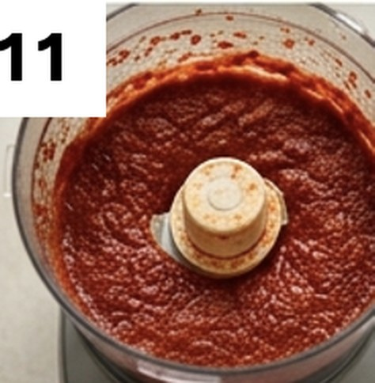
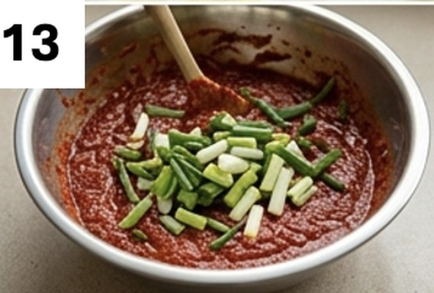
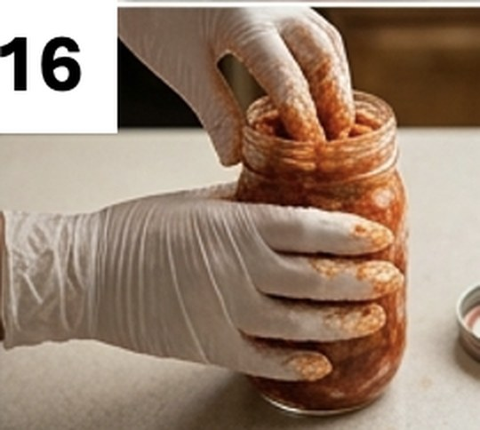

When I was in Saint Louis for graduate training, I found a quick and easy recipe for spicy Korean cabbage kimchi online, and I decided to try it with a group of friends. I bought all the ingredients and started soaking the cabbages early in the morning. Then I invited everyone over, and we made the kimchi together by hand. Each of us went home with a mason jar or two.
Growing up in South Korea, where making kimchi is an all-day family affair, I was struck by how simple this version was. And the taste? Decent — not bad at all for a first timer like me.
Hosting a small cultural event like that was a joy, and I would love to do it again someday, when Michelle is old enough to join.
You will need
- 3 large heads of Korean (napa) cabbage
- 2 packs of green onions
- 3 large buckets to hold the cabbage
- 1 bag of mineral sea salt (for brining)
For the marinade
- 3 bowls of cooked white sticky rice
- ½ Korean pear
- ¾ white onion
- 30 garlic cloves
- 2 pieces of ginger (each about the size of a garlic clove)
- 6 red peppers, seeds removed
- 6 cups ground Korean red pepper (gochugaru)
- 6 teaspoons kosher salt
- 3 Korean daikon, cut into 4 cm pieces
Instructions
- Wash the cabbages under running water and cut out any yellow leaves.
- Cut each cabbage lengthwise into quarters.
- Dissolve 1¼ cups of mineral sea salt in 12 cups of room-temperature water.
- Soak two cabbage quarters at a time in the salt water for 5 minutes, then remove and set aside.
- By hand, rub mineral sea salt between the leaves of each cabbage quarter — about 1⅔ cups total, divided among all the pieces.
- Place all the cabbage quarters in the buckets and pour in the salt water from step 4, adding more water as needed to fully submerge them.
- Let them rest at room temperature for 4 hours in summer, or 8 hours in winter.
- To check whether the cabbage is ready: lift a piece — it should look soft and floppy.
- Rinse the cabbage quarters under running water, then drain and squeeze them gently.
- Leave to drain for at least 30 minutes.
- Put all the marinade ingredients in a food processor and blend into a fine paste.
- Pour the marinade into a large mixing bowl.
- Cut the green onions into 4 cm lengths and stir them into the marinade.
- Put on cooking gloves and spread the marinade between the leaves of each cabbage quarter.
- Chop the coated cabbage into 1½-inch pieces on a cutting board and pack them into mason jars.
- Critical step: press the kimchi down firmly by hand to remove air bubbles before closing the lids.
Storing and fermentation
Leave the jars at room temperature for one day in summer, or 2 to 4 days in winter, then move them to the fridge. The longer you leave them at room temperature, the faster they ferment — and the sourer the kimchi gets.


